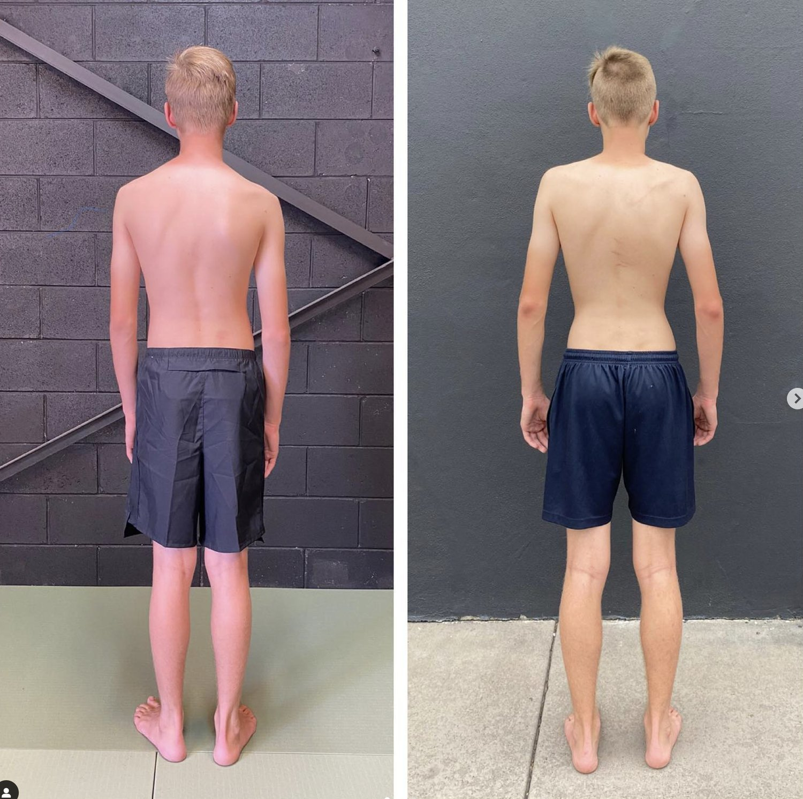

Is There A Way To Straighten Scoliosis Naturally?

Scoliosis Before after with Functional Patterns
For those wanting to avoid scoliosis surgery or a scoliosis brace, the options are limited.
Some practitioners, such as physiotherapists, prescribe exercises for scoliosis. These practitioners also recommend stretching with scoliosis to relieve pain.
The problem is,these scoliosis exercises and stretches fail to address the root cause. They often aim to reduce pain and strengthen various muscles in isolation.
At Functional Patterns, we understand that scoliosis is an integrated, gait based condition. This means that it is not a static problem, it is a movement-based problem.
Because of this, any exercise you do is going to exhibit your faulty movement patterns.
What do we mean by this?
To have scoliosis, you must have some dysfunctional movement patterns.
So, when you exercise, it is highly likely that your body will exhibit more of these patterns.
We call these compensations.
For example, image that you have a weak left back and ab muscles.
If a practitioner told you to use your weak, left side more than your right side, your body likely wouldn't allow it. Your body prefers to use the right side. This is why scoliosis continues to worsen in most cases. Your strong side continues to compensate for your weaker side.
Can gym improve posture if you have scoliosis?
So, if a practitioner struggles to out-smart your compensations - can you achieve success at the gym?
Gym is particularly great for one thing in particular: putting on muscle.
Muscle weakness is a key factor in scoliosis. Does this mean that increasing muscle mass is beneficial?
Four main complication that we run into when hitting the gym for scoliosis are:

1/ Increased Asymmetrical Stress: Scoliosis creates uneven distribution of weight and stress across the vertebrae. When lifting weights, the added compression can unevenly increase the stress on certain parts of the spine. This asymmetrical load can worsen the curvature or lead to additional spinal deformities.
2/ Imbalanced Muscle Strength: People with scoliosis often have imbalances in muscle strength around the spine. Weight lifting can further strengthen these imbalances. This can gradually pull the spine into more pronounced curvatures because of uneven muscle-pulls on the vertebral column.
3/ Increased Risk of Injury: The uneven stress distribution because of improper alignment during exercises increases injury risk. This increases the risk of acute injuries such as muscle strains, sprains, or disc issues like herniations or bulges.
4/ Compromised Breathing and Cardiac Function: Severe scoliosis can affect the chest cavity. This leads to compromised lung and heart function. Adding significant pressure to the spine and thoracic cavity through weight lifting can potentially exacerbate these complications, affecting breathing and overall cardiovascular health.
How do we combat these compensations in scoliosis?

Some practitioners use passive techniques such as wearing a brace to align the body during exercise. Long term, this only weakens the already weak muscles.
Why? You are still not activating and using the muscles that have switched off over time.
The only way to switch these muscles back on is to move the body in a way that requires them to switch on.
We need to think back to when we learned about ideal movement patterns and ratios. If we focus on ensuring the body is moving correctly through space, we can gradually reduce the spinal curvature.
We need to restore symmetry to the movement, and the structure will follow.
Let's look at some examples of these principles in action in patients with scoliosis:
IMPROVED SCOLIOSIS AND PAIN ELIMINATION USING MOVEMENT

Before - 27/2/2023 -> After - 29/1/2024
Before
- Chronic pain
- Could not play sports
- Could not sit without pain
- 29 degree Cob Angle
- Visible Scoliosis
After
- Pain free
- Playing multiple sports
- Confident in his body
- No visible scoliosis
- 19 degree Cob Angle
This client trained only using the Functional Patterns Method. He came in once per week from the end of February 2023 to January 2024. He was diligent with his homework exercises.
When he first started Functional Patterns he was reporting ongoing back pain:
-
when sitting at school,
-
when standing for periods
-
and when engaging in physical activity.
This limited his capacity to engage in schoolyard and team sports.
Since doing Functional Patterns for just under a year, he is now reporting that:
-
He is pain free,
-
He has a newfound confidence in his body
-
and he is enjoying getting into team sports and physical activity.
HERE IS WHAT HIS PARENTS HAVE TO SAY ABOUT HIS EXPERIENCE THUS FAR:
“Our son has been training with Neale and FP for 11 months now. During this time We have seen incredible results with not only his scoliosis, but his confidence too. He was diagnosed with scoliosis March ‘23 with a curve of 29 degrees in his spine.
He suffered from pain while playing sports and while standing and sitting for longer periods of time. He was also feeling self conscious of his back and the way it looked.
We approached FP after doing some research about scoliosis and the different avenues used to correct the spine curve. FP felt like the right fit for our son and his degree of scoliosis. Although we were a little hesitant/sceptical at first, it didn’t take long for us to see physical changes in his spine and posture. FP has been a great non invasive option for our son.
He has avoided any type of bracing (which we were told could be up to 23 hours a day) and the possibility of any future surgeries. Our son agrees that FP has been the absolute best decision we made. He is now playing two different sports, pain free and feeling more confident!”
— Client Pictured Above's Parents
X-RAYS
Before - February 2023
After - July 2023
This is a reduction in Cobb Angle of 10 degrees.
Because this reduction was achieved through a change in movement patterns, it is likely that it will be a lasting reduction.
We see that reductions caused by methods such as a scoliosis brace or surgery have a higher chance of relapsing.
This is because passive methods fail to address the root cause of the scoliosis.